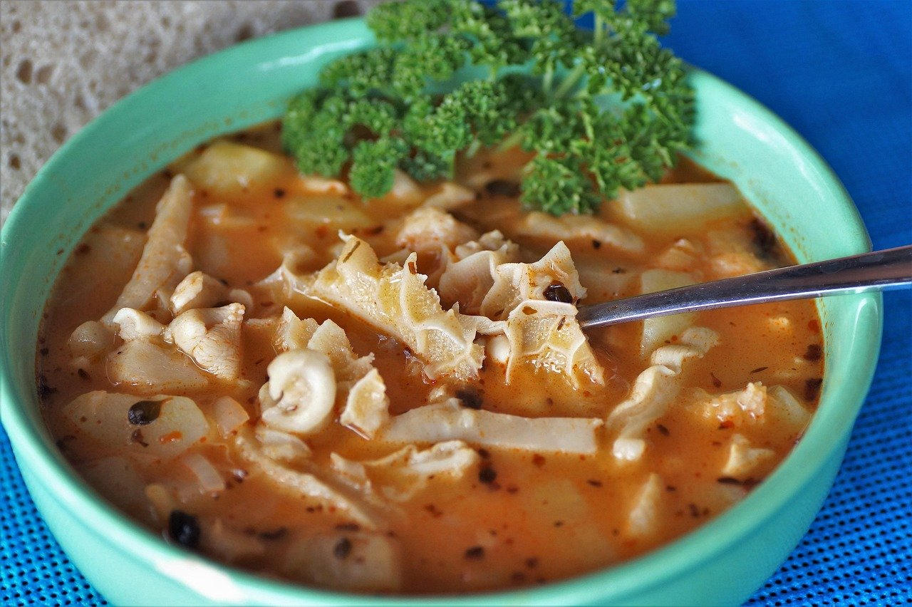
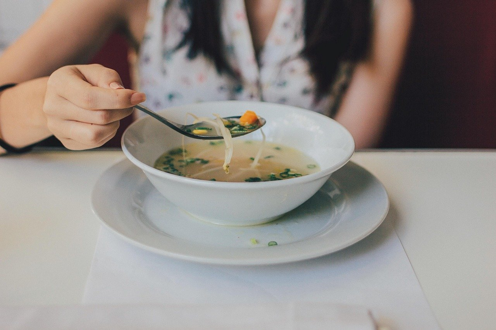

Ciorbă de burtă
la masăCiorbă de burtă, adusă la masă în restaurantul din Piața 14 Iulie 22.
Pentru preț și pentru alte feluri de pe meniu, întreabă la telefon.
Sună acumPagină de probă făcută de MK Studio pentru Fair Play · 600 lei + 100 lei/lună · gata în 5 zile
Scrie-ne pe WhatsAppCiorbă de burtă în Piața 14 Iulie 22, Cluj-Napoca. Intri, te așezi la masă și mănânci simplu.
Telefon: 0745 314 091

La Fair Play vii pentru o ciorbă de burtă. Te așezi la masă în Piața 14 Iulie 22 și mănânci cald, fără complicații.
Fair Play este restaurantul din Piața 14 Iulie 22, în Cluj-Napoca, unde găsești ciorbă de burtă. Vii pentru o masă simplă: comanzi, mănânci și îți vezi mai departe de zi.

Meniul de la Fair Play pornește de la ciorba de burtă.
Ciorbă de burtă, adusă la masă în restaurantul din Piața 14 Iulie 22.
Pentru preț și pentru alte feluri de pe meniu, întreabă la telefon.
Sună acumSună dacă vrei să afli ce e pe meniu azi sau dacă ai nevoie de indicații până la restaurant.